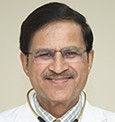

Cardiac Department
KIMS Department of Cardiology has more than 10 world-renowned cardiologists, who have extensive expertise in every aspect of cardiac care ranging
from angiography, echocardiography and heart transplantation to advanced clinical research for cardiac rehabilitation, heart failure and preventive cardiology.
We offer the latest in cardiology techniques, drugs, and interventions – making us one of the best cardiac hospitals in Hyderabad.
The Department of Cardiology's mission is to offer patients the most complete and advanced cardiology services for the diagnosis, treatment, and prevention of heart disease through teaching, research, and patient care. It is our mission to become one of the best heart hospitals not only in Hyderabad but also across the globe.
Our reputation of being the best heart surgery hospitals in Hyderabad is primarily due to the fact that we have the best heart specialists doctor in Hyderabad and our doctors are becoming leaders in the research, development of new treatments, as well as drug therapies that help improve the quality of life of patients. The members of KIMS faculty are authorities in the various subspecialties that comprise the field of cardiology, including non- invasive, invasive, diagnostic, and therapeutic means of responding to heart problems. With KIMS having the best cardiologists in Hyderabad, India as well as having excellent infrastructural facilities, we can rightfully retain the title of being the best cardiology hospital in Hyderabad.
Not just as a hospital, the Department of Cardiology at KIMS is also at the forefront of cardiac research. We have the best cardiac surgeons in Hyderabad who are internationally recognized for their contributions to cardiac care, research, and educationally-led cardiac services.
Expert Doctors
Dr. P. Rajendra Kumar Jain
Consultant Cardiologist
Director, Head of Department & Consultant Cardiologist at Krishna Institute of Medical Sciences Ltd. - 2004 till Present
Consultant Cardiologist at Mahavir Cardiovascular Centre - 1999 - 2004.

Dr. Gouthami .V
Sr. Consultant Paediatric Cardiologist
Dr. Vejendla Goutami was trained in advanced cardiology in Gandhi Medical College, Hyderabad, where she pursued her DM course.

Dr. P. A. Jiwani
Consultant Cardiologist
Nizam’s Institute of Medical Sciences Hyderabad.
Charles De Nicole Hospital University of Ruien, France.